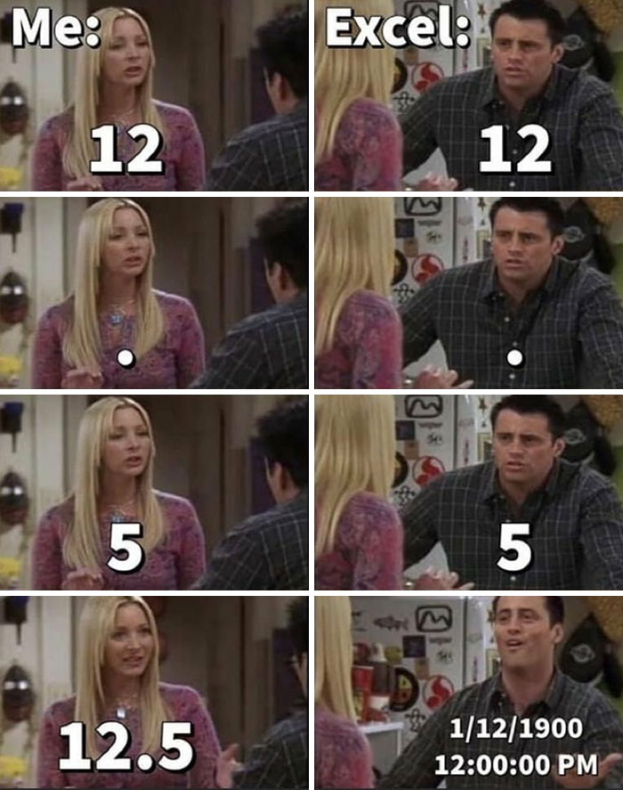

Ver código
# Instalar paquetes
install.packages("openxlsx") # Cargar y guardar archivos de Excel
install.packages("dplyr") # Manipular y limpiar datos
install.packages("janitor") # Entre otras cosas, facilitar manipulación de columnas¿A quién no le pasó esto alguna vez?

Esto en R muchas veces también nos trae dolores de cabeza así que en esto post vamos a ver cómo podemos solucionar esto.
Para este ejemplo vamos a utilizar 3 paquetes, openxlsx que nos permite cargar y guardar archivos de Excel, dplyr para manipular y limpiar datos (podés ver un tutorial acá). También vamos a usar el paquete janitor para limpiar los nombres de las columnas a un formato más fácil de utilizar (elimina tildes, pasa todo a minúscula y reemplaza espacios por guiones, por ejemplo).
El primer paso, en caso que no los tengas aún, es instalar los paquetes:
# Instalar paquetes
install.packages("openxlsx") # Cargar y guardar archivos de Excel
install.packages("dplyr") # Manipular y limpiar datos
install.packages("janitor") # Entre otras cosas, facilitar manipulación de columnasUna vez que termina la instalación, hay que cargarlos. No vamos a cargar el paquete janitor porque sólo vamos a usar una función.
Cargar un paquete “deja activas” todas las funciones del paquete, lo cual implica un consumo de memoria, muchas veces ínfimo, pero consumo al fin, así que en este caso mostraremos como usar una función sin cargar todas las funciones del paquete.
# Cargar paquetes
library(openxlsx)
library(dplyr)El caso que usaremos de ejemplo simula ser una base de Postulantes de una búsqueda que llevamos adelante para una vacante de People Analytics. Primero carguemos los datos que están almacenados en una carpeta llamada data.
# Cargar los datos en R
datos <- read.xlsx("data/Postulantes.xlsx") %>%
janitor::clean_names() # Usamos solo la función clean_names() sin cargar todo el paquete janitorAhora veamos los datos que tenemos cargados:
# Ver los datos cargados
datos fecha_sourcing busqueda nombre apellido telefono mail
1 44729 People Analytics Sergio Garcia 1111111111 sergio@d4hr.com
2 44729 People Analytics Daniela Garcia 2222222222 <NA>
3 44729 People Analytics Yanel Paulette 3333333333 <NA>
4 44729 People Analytics Carla Cirone 4444444444 <NA>
5 44729 People Analytics Santiago Lardone 5555555555 <NA>
empresa puesto github twitter
1 R4HR Master of Puppets chechoid @sergiogarciamor
2 R4HR Master of Puppets <NA> <NA>
3 R4HR Master of Puppets <NA> <NA>
4 R4HR Master of Puppets <NA> <NA>
5 R4HR Master of Puppets <NA> <NA>
linkedin fuente status
1 https://www.linkedin.com/in/sergiogarciamora/ Twitter Activo
2 https://www.linkedin.com/in/claudiadanielagarcia/ Linkedin Activo
3 https://www.linkedin.com/in/yanelpaulette/ Linkedin Activo
4 https://www.linkedin.com/in/carla-cirone-0566b095/ Linkedin Activo
5 https://www.linkedin.com/in/santiagolardonequinodozrrhh/ Linkedin Activo
fecha_ultimo_contacto
1 44739
2 44739
3 44739
4 44739
5 44739# Hagamos un zoom en los campos que contienen fechas
datos %>%
select(fecha_sourcing, fecha_ultimo_contacto) fecha_sourcing fecha_ultimo_contacto
1 44729 44739
2 44729 44739
3 44729 44739
4 44729 44739
5 44729 44739En la tabla anterior vemos que el valor que obtenemos en la primera columna es 44729, el número que representa a la fecha 17/6/22 como podemos apreciar en el archivo original:
Ahora veremos cómo podemos resolver este problema.
Para empezar, seleccionemos algunas columnas nomás usando la función select(). Vamos a seleccionar los campos de fecha_sourcing que representa cuándo inició la búsqueda, nombre, empresa, y fecha_ultimo_contacto donde anotamos cuándo fue la última vez que nos pusimos en contacto con cada persona.
# Seleccionar los campos con fechas, nombre y empres y sobreescribo el data frame
datos <- datos %>%
select(fecha_sourcing, nombre, empresa, fecha_ultimo_contacto)
# Ver el nuevo dataframe
datos fecha_sourcing nombre empresa fecha_ultimo_contacto
1 44729 Sergio R4HR 44739
2 44729 Daniela R4HR 44739
3 44729 Yanel R4HR 44739
4 44729 Carla R4HR 44739
5 44729 Santiago R4HR 44739Ahora nos quedamos con un data frame de 5 filas y 4 columnas.
Para transformar el campo fecha_sourcing de un formato numérico a un formato de tipo fecha, vamos a usar la función as.Date() de R base.
# Transformar el campo fecha_sourcing a tipo fecha
datos %>%
mutate(fecha_sourcing = as.Date(fecha_sourcing, # Sobrescribimos el campo fecha_sourcing
origin = "1899-12-30", # Fecha de origen para el conteo
tz = "UTC")) # Huso horario fecha_sourcing nombre empresa fecha_ultimo_contacto
1 2022-06-17 Sergio R4HR 44739
2 2022-06-17 Daniela R4HR 44739
3 2022-06-17 Yanel R4HR 44739
4 2022-06-17 Carla R4HR 44739
5 2022-06-17 Santiago R4HR 44739El trabajo con fechas siempre fue complejo desde el punto de vista del análisis de datos. Especialmente con los distintos formatos que se usan en el mundo, por ejemplo dd/mm/aaaa en Sudamérica, o mm/dd/aaaa en Estados Unidos por ejemplo. R, cuando un campo fecha carga correctamente, lo transforma a un formato ISO 8601 aaaa-mm-dd.

El primer número que obtuvimos cuando cargamos la tabla en R (el 44729) significa que desde el 30 de diciembre de 1899 hasta el 17 de Junio de 2022 pasaron 44.729 días. De ahí el número que obtuvimos en la carga.
El parámetro tz, nos permite especificar el huso horario del registro. Para algunos casos puede ser relevante, pero para la mayoría de los casos de uso que le daríamos en RRHH, es un parámetro que podemos incluir o no.
Con la tabla que estamos usando de ejemplo, no hay mucho problema en repetir el paso ya que únicamente tenemos dos campos de fechas. ¿Pero qué pasa si tenemos 6, 7, o más campos de fechas en un archivo? Repetir estos pasos manualmente va a hacer confuso nuestro código y más complejo de mantener.
Veamos una forma de cambiar todos los campos de fecha usando algunas funciones auxiliares del paquete dplyr.
# Cambios los dos campos de fecha a la vez
datos %>%
mutate(across(starts_with("fecha"),
~as.Date(.x,
tz = "UTC",
origin = "1899-12-30"))) fecha_sourcing nombre empresa fecha_ultimo_contacto
1 2022-06-17 Sergio R4HR 2022-06-27
2 2022-06-17 Daniela R4HR 2022-06-27
3 2022-06-17 Yanel R4HR 2022-06-27
4 2022-06-17 Carla R4HR 2022-06-27
5 2022-06-17 Santiago R4HR 2022-06-27En este caso usamos la función across() para indicarle a R que ejecute la función (en este ejemplo, as.Date()) en todas las variables que cumplan con algún criterio. En este ejemplo, nos valemos de otra función auxiliar, starts_with(), que como su nombre en inglés lo indica, va a ejecutar la función en todas las columnas que empiecen con el término "fecha".
Este ejemplo funciona porque los campos que contienen una fecha comienzan con el nombre fecha. Por eso es importante al momento de diseñar una base de datos, un formulario, o cualquier registro que utilicemos para que haya una consistencia entre los nombres de los campos para facilitarnos posteriormente el proceso y análisis de datos, independiemente del software que utilicemos.
Presten atención a que delante de la función as.Date() usamos este símbolo (~ ) llamado virgulilla (en Neuquén, Argentina, le dríamos ñuflo). Con ese símbolo le indicamos a R que esa va a ser la función que vamos a replicar en todos los campos.
El argumento .x, representa a todas las columnas que habíamos seleccionado con las funciones across() y starts_with(). Es decir que es la forma que tiene R de simplificar cuáles son los campos que tiene que transformar sin que le tengamos que indicar uno por uno cuales son.
Este post lo hice originalmente en 2022, y recuerdo que al día siguiente de haberlo publicado, me encontré con el paquete anytime desarrollado por Dirk Eddelbuettel, que resuelve muchos de estos inconvenientes en un tuit (es decir, con pocas líneas de código).
Carguemos los datos nuevamente:
# Cargar los datos en R
datos <- read.xlsx("data/Postulantes.xlsx") %>%
janitor::clean_names() # Usamos solo la función clean_names() sin cargar todo el paquete janitor
# Seleccionemos dos campos nada más
datos2 <- datos %>%
select(apellido, fecha_ultimo_contacto)Ahora instalemos el paquete anytime:
# Instalar 'anytime'
install.packages("anytime")El próximo paso es cargar el paquete.
# Cargar anytime
library(anytime)Para corregir la forma en que el campo fecha está cargado desde Excel sólo tenemos que hacer lo siguiente:
# Sobreescribir el campo de fecha
datos2 <- datos2 %>%
mutate(fecha_ultimo_contacto = anydate(fecha_ultimo_contacto))
# Ver los resultados
datos2 apellido fecha_ultimo_contacto
1 Garcia 2092-06-28
2 Garcia 2092-06-28
3 Paulette 2092-06-28
4 Cirone 2092-06-28
5 Lardone 2092-06-28En este ejemplo, el año no es el correcto y si prestamos atención en vez de 27 de Junio, nos arroja 28 de Junio. Esto es un efecto de cuál es la fecha que se toma de origen: en los ejemplos anteriores veíamos que definíamos 1899-12-30, en cambio el paquete anytime usa 1/1/1970. Esto explica en parte los problemas que nos causa Excel con las fechas (y R también, digamos todo).
Incluso el origen del archivo puede ser un problema. Por ejemplo, si genero un archivo de Excel o un csv en Argentina, donde usamos el formato de fecha dd/mm/yyyy (día, mes, año), y se lo mando a una persona en Estados Unidos donde usan el formato de fecha mm/dd/yyyy (mes, día, año) puede generar que algo que funciona en un lado, no funcione en otro.
Por eso si bien este ejemplo no es perfecto, quería compartirlo porque el código es súper simple, y además a Dirk, el creador del paquete, le encantó este meme:

Así que si bien trabajar con fechas y horas siempre es complejo, independientemente si estás trabajando con R, Python, Excel, o Power BI. Con este post queríamos mostrar una forma de hacerlo. También existe el paquete lubridate que permite trabajar y hacer cálculos con fechas y del cual hicimos un tutorial que podés ver en YouTube y descargar el código desde GitHub.
Si bien, los paquetes como lubridate o anytime son más intuitivos de usar, a veces por un tema de falta de mantenimiento, versiones diferentes, o performance, conviene usar las funciones de R base.
R4HR, la comunidad que también llamamos el Club de R para RRHH es una comunidad de aprendizaje de programación en R destinada para todas las personas que trabajan o quieran trabajar en RRHH en todas partes del mundo. Pensamos esta comunidad inicialmente para la comunidad hispanoparlante para facilitar el aprendizaje y generar contenido que sea relevante para las personas que nos desarrollamos en estas funciones.
Podes sumarte a nuestra comunidad en Slack, o bien seguirnos en redes sociales, acceder a todo nuestro contenido y participar en nuestras actividades gratuitas y abiertas. Todo eso lo encontrás en este link ü•ù.